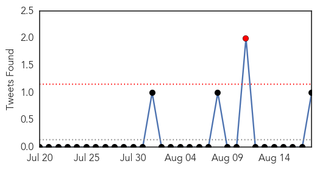

30 Day Trends
Web: 0 alerts, 0 warnings
Twitter: 1 alerts, 0 warnings
Top Articles:
- 0.797
- ITS develops new T cell vaccine to protect humans from seasonal and pandemic influenza A
- 0.792
- CVS/pharmacy Survey Focuses on Flu Vaccines for Seniors
- 0.791
- Why Pregnant Women Don't Get The Flu Vaccine
- 0.783
- Immune Targeting Systems and WCCT Global Announce a New Influenza A H1N1 Virus to Support the Experimental Human Viral Challenge Model - News Press Release
- 0.782
- Why aren't pregnant women getting flu vaccine?
- 0.619
- CDC scientist kept quiet about bird flu blunder
- 0.598
- CDC Scientist Kept Quiet About Serious Flu Blunder
Top Tweets:
- 0.724
- .@WHO issues travel ebola guidance. UK updates their pandemic influenza plan. HealthSecurity http://t.co/H1JhGCUg02
Web/News Articles

Tweets
Article Locations

Article Confidences